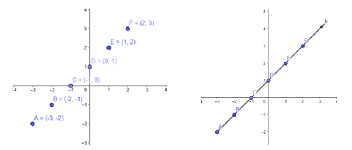
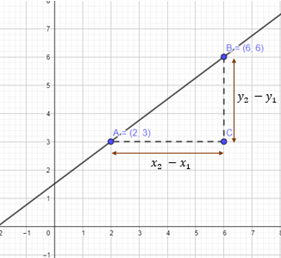

Sekilas
Kemiringan atau gradien dan persamaan garis lurus dipergunakan baik dalam sejarah maupun sekarang. Kemiringan menentukan posisi suatu garis terhadap koordinat X dan koordinat Y, sedangkan persamaan garis lurus terjadi bila ada dua titik atau koordinat yang berkaitan, jika hanya satu titik tidak dapat dikatakan suatu persamaan garis lurus. Sejarah mengatakan bahwa rumus dasar kemiringan ialah 𝑦 = 𝑚𝑥 + 𝑏, sedangkan rumus kemiringan atau gradien, yaitu m = . Penyelesaian permasalahan kemiringan dan persamaan linear ini diperkenalkan pertama kali oleh matematikawan Rene Descartes yang merupakan Bapak Geometri Analitik.
Dalam kehidupan sehari-hari, kemiringan dan persamaan garis lurus juga digunakan untuk mempermudah dan memberi keamanan dan kenyamanan. Contohnya pembuatan jalan yang menanjak dan menurun telah diperhitungkan dengan menggunakan kemiringan agar dalam penggunaannya aman dan nyaman. Tahukah kamu bahwa pembuatan Menara Pisa di Italia juga menggunakan konsep persamaan garis lurus dalam menentukan sudut kemiringannya?
Pendahuluan
Persamaan garis lurus dan kemiringan merupakan materi matematika yang diajarkan di kelas VIII SMP dan sangat penting untuk dipelajari karena memiliki banyak peran dalam kehidupan sehari-hari. Sementara itu, matematika merupakan salah satu mata pelajaran yang diujikan secara nasional, maka seluruh kompetensi yang ada harus dikuasai siswa/i, sehingga hasil belajar yang diperoleh siswa/i mencapai Standar Ketuntasan Lulusan (SKL) yang telah ditetapkan. Oleh sebab itu, harus adanya upaya meminimalkan kesulitan-kesulitan belajar matematika yang dihadapi siswa/i.
Kesulitan belajar pada matematika khususnya materi persamaan garis lurus dan gradien yang dialami siswa/i dapat menghambat dalam mencapai standar kompetensi. Hasil penelitian, banyaknya siswa/i mengalami kesulitan tersebut, seperti menentukan gradien, menentukan persamaan garis lurus, menentukan titik potong pada persamaan garis lurus, membuat grafik persamaan, keliru dalam penggunaan rumus, saat berhadapan dengan soal tentang gradien, dan kesulitan lainnya. Hal ini terjadi karena siswa kurang memahami konsep dari persamaan garis lurus dan hanya menghafalkan rumus penggunaanya.
Suatu cara yang bisa di gunakan dalam mengatasi kesulitan belajar pada materi persamaan garis lurus dan gradien dengan menghubungkan permasalahan dengan kehidupan sehari-hari sehingga memudahkan siswa/i untuk lebih memahami konsep materi ini. Penggunaan multimedia tentang materi persamaan garis lurus dapat mendukung dan memudahkan siswa/i dalam memahami materi ini. Selain itu, perbanyak menyelesaikan latihan soal dapat meningkatkan pemahaman siswa/i dalam menggunakan rumus yang tepat. Oleh karena itu, bahan ajar ini ditulis untuk membantu siswa/i dalam memahami dan menerapkan konsep materi persamaan garis lurus dan gradien.
Garis Lurus
Pengertian
Persamaan Garis Lurus atau PGL adalah persamaan linear yang mengandung satu atau dua variabel. Persamaan garis lurus dapat digambarkan dalam koordinat cartesius untuk mendapatkan grafik yang berbentuk garis lurus.
Garis lurus adalah kumpulan titik-titik yang letaknya sejajar. Dari Gambar diatas, terlihat bahwa titik-titik A, B, C, D, E, dan F memiliki letak yang sejajar dengan suatu garis lurus, misalkan garis k. Sebuah garis lurus dapat terbentuk dengan syarat sedikitnya ada dua titik pada bidang koordinat Cartesius.
Bentuk Umum Persamaan Garis Lurus
Rumus umum fungsi adalah 𝑦 = 𝑓(𝑥) = 𝑎𝑥 + 𝑏 dengan 𝑎, 𝑏 ∈ 𝑅 dan 𝑎 ≠ 0. Oleh karena itu, grafik fungsi linear 𝑦 = 𝑓(𝑥) = 𝑎𝑥 + 𝑏 merupakan garis lurus, sehingga disebut persamaan garis lurus atau 𝑦 = 𝑎𝑥 + 𝑏.
Bentuk umum persamaan garis lurus
𝑎𝑥 + 𝑏𝑦 + 𝑐 = 0 atau 𝑎𝑥 + 𝑏𝑦 = 𝑐 Persamaan dengan gradien m = -a/b
𝑦 = 𝑚𝑥 + 𝑐 Persamaan dengan gradien m
Keterangan:
𝑥 dan 𝑦 adalah variabel
𝑎, 𝑏, 𝑐, 𝑚 adalah konstanta
Contoh:
Jika terdapat persaman apakah dapat dikatakan suatu persamaan garis lurus?
Penyelesaian:
10𝑥 = 5𝑦 + 8
5𝑦 = 10𝑥 – 8
Bentuk tersebut merupakan bentuk 𝑦 = 𝑚𝑥 + 𝑐 dengan 𝑚 = 2 dan c= -8/5. Jadi, merupakan persamaan garis lurus.
Menggambar Persamaan Garis Lurus Pada Koordinat Cartesius
Garis lurus adalah kumpulan titik-titik yang letaknya sejajar. Sebuah garis lurus dapat terbentuk dengan syarat sedikitnya ada dua titik pada bidang koordinat cartesius. Langkah-langkah dalam membuat gambar garis lurus di koordinat cartesius sebagai berikut:
• Tentukan dua pasangan titik yang memenuhi persamaan garis tersebut dengan membuat tabel untuk mencari koordinatnya.
• Gambar dua titik tersebut pada bidang cartesius.
• Hubungkan dua titik tersebut, sehingga membentuk garis lurus, yakni grafik persamaan yang dicari.
Contoh:
Gambarlah grafik persamaan garis lurus y = -2x + 4 pada bidang cartesius, jika x, y variabel pada himpunan bilangan real.
Penyelesaian:
Garis akan memotong sumbu X jika y = 0. Maka diperoleh
𝑦 = -2𝑥 + 4
0 = -2𝑥 + 4
-2𝑥 = - 4
𝑥 = 2
Garis akan memotong sumbu Y jika x = 0. Maka diperoleh
y = -2x + 4
y = 0 + 4
y = 4

Untuk lebih jelasnya, dapat kalian lihat dari video berikut
Gradien Garis Lurus
Pengertian Gradien
Perhatikan orang yang ingin menaiki tangga. Dapatkah kalian menentukan nilai kemiringannya?
Jika tangga dianggap sebagai garis lurus maka nilai kemiringan tangga dapat ditentukan dengan cara membandingkan tinggi tembok yang dapat dicapai ujung tangga dengan jarak kaki tangga dari tembok. Nilai kemiringan tangga tersebut disebut gradien. Gradien ialah perbandingan antara jarak tegak terhadap jarak mendatar (Nuharini & Wahyuni, 2008).
Gradien garis pada sistem koordinat Cartesius memiki sifat-sifat sebagai berikut:
a) Panjang atau pendeknya garis tidak mempengaruhi gradien.
b) Menentukan sebagian ruas garis dapat menentukan gradien.
c) Garis yang gradiennya positif akan miring ke kanan.
d) Garis yang gradiennya negatif akan miring ke kiri.
e) Gradien garis yang dilalui titik (0,0) dan titik (x, y) mempunyai gradien (Aisyah et al., 2021, hal. 7)
Gradien Garis Yang Melalui Titik Pusat O (0, 0) Dan Titik (x, y)
Gradien suatu garis adalah bilangan yang menyatakan kecondongan suatu garis yang merupakan perbandingan antara komponen y dan komponen x. Perhatikan Gambar 6 di bawah ini, tampak garis y=1/2 x dengan titik O(0, 0), A(2, 1), dan B(6, 3) terletak pada garis tersebut. Bagaimanakah perbandingan antara komponen y dan komponen x dari masing-masing ruas garis pada y=1/2 x tersebut?

Perhatikan ruas garis OA' pada segitiga OAA'
Perhatikan ruas garis OB' pada segitiga OBB'
Perhatikan juga ruas garis AB pada segitiga ABC
Dari uraian tersebut, perbandingan komponen y dan komponen x pada masing-masing ruas garis menunjukan hasil bilangan yang sama. Jadi, gradien dari garis y = 1/2 x adalah 1/2. Dapat disimpulkan, koefisien x pada persamaan garis y=1/2 x adalah gradien.
Gradien Garis yang Melalui Dua Titik
Gambar tersebut memiliki sebuah garis lurus pada bidang koordinat yang melalui titik A dan B. Untuk mencari gradien garis tersebut, kalian dapat menentukan nilai AB pada segitiga ACB (titik C perpotongan antara A dan B) dengan menentukan perbandingan ordinat (BC) dan absis(AC).
Maka, gradien garis yang melalui dua titik adalah . Untuk lebih jelasnya, kalian dapat melihat video di bawah ini.
Gradien Garis-Garis Yang Saling Sejajar

Gradien garis yang sejajar di antaranya adalah gradien garis yang sejajar dengan sumbu-x, gradien garis yang sejajar dengan sumbu-y, dan gradien dua garis yang sejajar. Gradien garis sejajar memiliki sifat-sifat, yaitu nilai dari gradien akan sama untuk garis-garis yang sejajar dan jika diketahui garis-garis saling sejajar, maka pasti gradiennya sama.
Selain itu, jika garis sejajar dengan sumbu- x maka nilai gradiennya adalah nol, jika garis sejajar dengan sumbu-y maka garis tersebut tidak memiliki gradien, dan jika garis y1 = m1x + c sejajar dengan garis y2 = m2x + c maka gradien kedua garis tersebut sama, m1 = m2.
Gradien Garis-Garis Yang Saling Tegak Lurus

Tegak lurus adalah hubungan antara dua garis lurus yang bertemu di sebuah sudut tegak. Sebuah garis dikatakan tegak lurus terhadap garis lainnya jika kedua garis tersebut berpotongan membentuk sudut tegak atau 90°.
Hasil kali kedua gradien yang saling tegak lurus adalah mAB × mQP = 1 × (-1) = -1. Jika dua buah garis saling tegak lurus maka hasil kali gradien kedua garis tersebut adalah –1.
Menentukan Persamaan Garis
Persamaan Garis dengan Gradien m yang Melalui Sebuah Titik
Misalkan suatu garis mempunyai gradien m dan melalui sebuah titik (x1, y1). Bentuk persamaan garis tersebut adalah y = mx + c. Untuk menentukan persamaan garis tersebut perhatikan langkah- langkah berikut.
(a) Substitusi titik (x1, y1) ke persamaan y = mx + c.
y = mx + c
y1 = mx1 + c
c = y1 – mx1
(b) Substitusi nilai c ke persamaan y = mx + c
y = mx + c
y = mx + y1 – mx1
y – y1 = mx – mx1
y – y1 = m(x – x1)
Persamaan garis yang melalui titik (x1, y1) dan bergradien m adalah y – y1 = m(x – x1).
Contoh:
Tentukan persamaan garis yang melalui titik P(2, 6) dan memiliki gradien -2.
Penyelesaian:
y – y1 = m(x – x1).
y – 6 = 2(x – 2)
y = 2x – 4 + 6
y = 2x + 2 atau 2x – y + 2 = 0
Persamaan Garis yang Melalui Dua Titik
Pada bagian sebelumnya, kamu telah mempelajari menentukan persamaan garis yang melalui satu titik dan gradien yang diketahui. Selanjutnya, pada bagian ini kamu akan mempelajari cara menentukan persamaan garis yang melalui dua titik. Perhatikan uraian berikut:
y - y1 = m(x - x1) adalah rumus umum persamaan garis dari gradien dan titik koordinat
adalah rumus gradien yang melalui dua titik
Dari kedua rumus tersebut, dapat diuraikan sebagai berikut
y - y1=m(x - x1)
y - y1=(x - x1)
Jadi, rumus untuk menentukan persamaan garis yang melalui dua titik adalah
Jarak Titik ke Garis
Jarak merupakan salah satu permasalahan matematika yang sering dijumpai di lingkungan sekitar. Jarak dapat diukur diantara dua objek, seperti rumah dengan sekolah, rumah dengan supermarket, dan objek lainnya. Pada bagian ini, kita akan membahas mengenai jarak antara dua objek yang berupa titik dan garis lurus. Jarak dua titik dan titik ke garis memiliki kaitan dengan persamaan garis lurus. Garis yang digunakan adalah dalam bentuk ax + by + c = 0.
• Jarak titik A(x1, y1) dengan titik B(x2, y2) adalah

• Jarak titik A(x1, y1) dengan garis ax + by + c = 0
Jarak dua objek adalah panjang lintasan terpendek yang menghubungkan kedua objek tersebut. Ruas garis yang tegak lurus dengan garis ax + by + c = 0 dan memiliki ujung di titik A dan ujung satunya di garis tersebut merupakan lintasan terpendek yang menghubungkan titik dengan garis, maka Panjang dari ruas tersebut yaitu d (Jarak titik A terhadap garis ax + by + c = 0). Jadi, menentukan jarak antara titik yang memiliki koordinat (x1, y1) dengan garis lurus yang persamaanya ax + by + c = 0 dengan rumus: